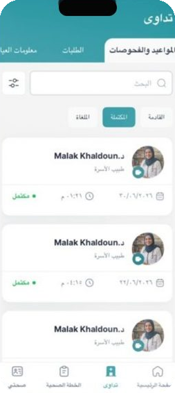
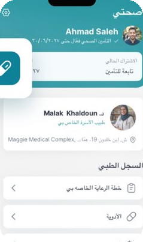

Open the app. Tap Treat Me.افتح التطبيق واضغط «عالجني الآن»
No doctor to pick, no slot to find. The next available family doctor is paged the moment you send your request.
لا تختار طبيباً ولا تبحث عن موعد. يُستدعى أول طبيب أسرة متاح لحظة إرسال طلبك.
A family doctor joins by video.ينضم طبيب أسرة بالفيديو
Usually within minutes, day or night. Doctors are Jordanian Board family medicine specialists working in shifts.
عادةً خلال دقائق، ليلاً أو نهاراً. أطباؤنا أخصائيو طب أسرة معتمدون من البورد الأردني يعملون بالمناوبات.
Prescription, sick leave, lab request.وصفة، إجازة مرضية، طلب مختبر
Everything the doctor issues lands in the My Tadawa tab, time-stamped and tied to the consultation, so your insurer can verify it.
كل ما يصدره الطبيب يصل إلى تبويب «تداوىٰ الخاصة بي»، مختوماً بالوقت ومربوطاً بالاستشارة، ليتمكن تأمينك من التحقق منه.
Your record follows you.سجلّك يرافقك
Results, vaccines, allergies and eight vitals in My Health. Need a clinic, specialist or home visit? The same doctor books it, in the same record.
النتائج والتطعيمات والحساسيات وثماني علامات حيوية في «صحتي». تحتاج عيادة أو اختصاصياً أو زيارة منزلية؟ يحجزها الطبيب نفسه في السجل نفسه.
Never miss a dose.لا تفوّت جرعة
Current and past medicines with reminders, and a care plan you and your doctor update together over time.
الأدوية الحالية والسابقة مع التذكير، وخطة رعاية تحدّثها مع طبيبك بمرور الوقت.


